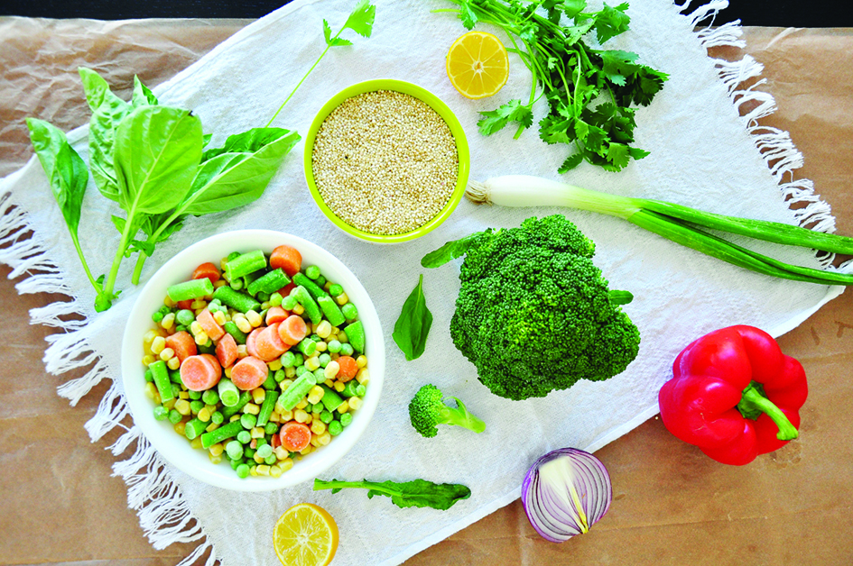

Nutrición
Paquete básico para vegetarianos
Se consideran nutrientes críticos en la alimentación vegetariana al hierro, Zinc, proteínas, calcio, la vitamina B12, la vitamina D y el omega 3.

-Proteína completa (de alto valor biológico), en los casos de ser de origen vegetal lo logramos por complementación proteica. Repasemos:
• Legumbres + Cereales: Rissoto, arroz con lentejas, quinoa con porotos adduki, pan con pasta de garbanzos (hummus)… las opciones son infinitas.
• Legumbres + Frutas secas + semillas: Ensalada de porotos con castañas y semillas de sésamo, paté de lentejas con nueces picadas y semillas de lino…
• Cereales + Frutas secas + semillas: Arroz con almendras y semillas de girasol, fideos con pesto (nueces y aceite) y semillas de sésamo.
• Cereales + Lácteos vegetales (queso de soja -tofu-, leche de soja): Arroz con tofu, pizza de Tofu, leche de soja con cuadraditos de avena.
• Frutas secas + Semillas + Lácteos vegetales: Tofu rebozado con sésamo salteado con almendras, batido de leche de soja con nueces y pan con semillas.
• Legumbres + Lácteos vegetales + Hortalizas: Salteado de vegetales con tofu y adzuki.
Otro concepto importante es el de digestibilidad, que refiere a la cantidad de nitrógeno (las proteínas están compuestas por Hidrógeno, Oxígeno, Carbono y NITROGENO), absorbido en relación a lo ingerido. Es decir, cuánto el cuerpo aprovecha. En el caso de las proteínas de origen animal, en general es del 95%; en el caso de las proteínas de origen vegetal es de alrededor del 80% (esto se define por tabla).
-El hierro: Funciona principalmente como un portador de oxígeno en la sangre. Algunas de las fuentes de hierro para vegetarianos son:
• Cereales fotificados con hierro
• Vegetales verdes
• Legumbres… pero deben combinarse con vitamina “C” para ser disponible. Las fuentes de Vitamina C pueden ser cítricos, frutas en general, kiwi, morrón verde y tomate.
• También tiene hierro, el polen, las algas, el jugo de arándanos y uva, la tekka, las frutas secas, las semillas, la levadura nutricional.
-El calcio: Es necesario para el desarrollo de huesos y dientes, y para el mantenimiento del sistema óseo.
Algunas de las fuentes de calcio para los vegetarianos son:
• Cereales fortificados.
• Productos de soja (tofu, bebidas hechas en base a la soya).
• Las coles.
• Los productos lácteos son una opción para los lacto vegetarianos.
• Almendras, sésamo, la tahini (pasta de sésamo).
-El zinc: Es necesario para las reacciones bio-mecánicas. También facilita el funcionamiento adecuado del sistema inmunológico.
• Los productos lácteos tienen zinc para los lacto vegetarianos.
• Las frutas secas.
-La vitamina B12: Algunas de las fuentes de la vitamina B12 para vegetarianos son los productos lácteos, huevos y alimentos fortificados con la vitamina B12. En estudio están las algas, y una opción es la levadura nutricional (no la de cerveza)… de todos modos no cubre el requerimiento. En la mayoría de los casos, se precisa algún suplemento.
-La vitamina D: Se encuentra en lácteos y huevos, o es necesario algún suplemento, sobre todo en invierno. Si no la exposición solar (real y sostenida a diario).
-El omega 3: Está presente en las semillas de lino, de chia y sus respectivos aceites. También en la nuez en menor grado y en los derivados de la soja.